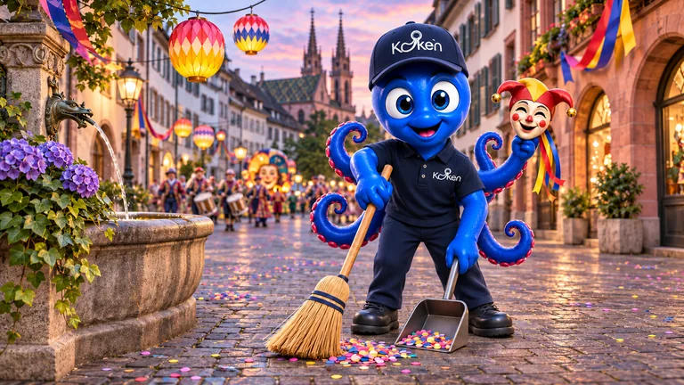
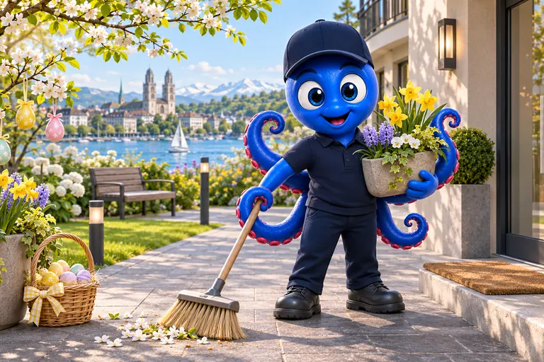
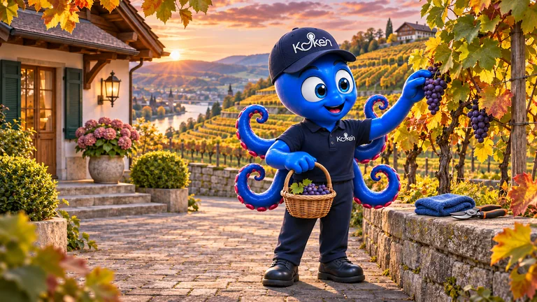
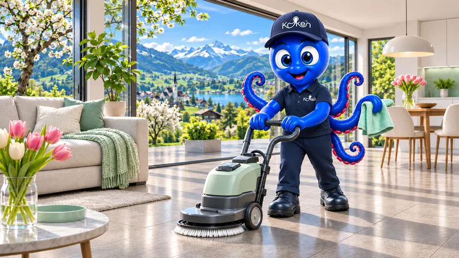
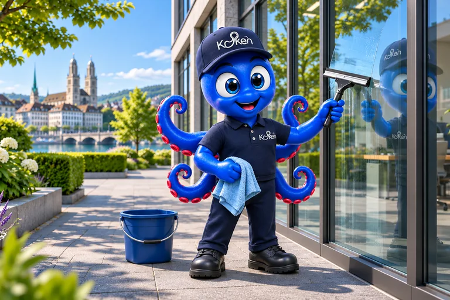
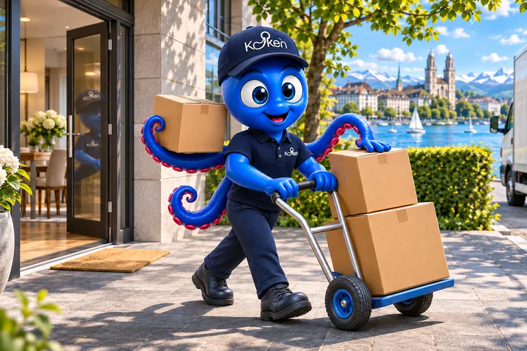
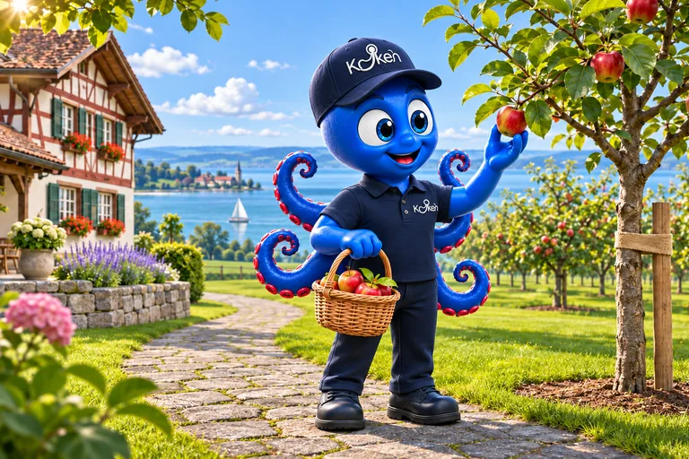

Estación
Primavera
Marzo–mayo; otras fechas destacadas tienen prioridad.
Limpieza de cristales entre flores de primavera.
Ver en el iniciospringKraken PFM · revisión de medios
Colección de ilustraciones nuevas creada a partir del Kai del sitio: estaciones, celebraciones suizas y servicios profesionales. Esta galería de revisión se mantiene fuera de la navegación comercial.
Fechas de referencia: 2027 · Europe/Zurich. Las ventanas indican cuándo se muestra una escena en el selector del sitio. Vuelta al colegio, vendimia y limpieza de primavera son campañas editoriales, no fechas oficiales. Las celebraciones tienen prioridad sobre la estación base. Los enlaces al inicio permiten revisar cada uno de los 15 temas mediante ?kai=…&lang=es.
Estación
Marzo–mayo; otras fechas destacadas tienen prioridad.
Limpieza de cristales entre flores de primavera.
Ver en el iniciospringEstación
Junio–agosto; otras fechas destacadas tienen prioridad.
Terraza y jardineras junto al Rin.
Ver en el iniciosummerEstación
Septiembre–noviembre; la vendimia tiene ventana propia.
Mantenimiento de accesos y recogida de hojas.
Ver en el inicioautumnEstación
Diciembre–febrero, fuera de las ventanas de celebraciones.
Kai prepara un acceso limpio y libre de nieve.
Ver en el iniciowinterCelebración
Celebración: 1 de enero. Ventana visual: 1–3 de enero.
Un comienzo renovado en un vestíbulo suizo.
Ver en el inicionew-year
Evento local · fecha móvil
Referencia 2027: 15–17 de febrero.
Kai cuida el espacio público durante el carnaval.
Ver en el iniciocarnival
Fecha móvil
Referencia 2027: Pascua el 28 de marzo; ventana visual 26–29 de marzo.
Flores y detalles de Pascua en una entrada cuidada.
Ver en el inicioeasterEvento local · fecha anual
Referencia 2027: evento 19 de abril; ventana visual 18–19 de abril.
Escena ilustrada de primavera con el Böögg al fondo.
Ver en el iniciosechselaeutenCelebración nacional
Celebración: 1 de agosto. Ventana visual: 29 de julio–2 de agosto.
Terraza preparada con flores y banderas suizas.
Ver en el inicioswiss-national-dayCampaña editorial
Ventana visual: 10–31 de agosto. No es el calendario escolar oficial.
Kai prepara una entrada escolar acogedora.
Ver en el inicioback-to-school
Campaña editorial
Ventana visual: 15 de septiembre–15 de octubre.
Cuidado exterior entre viñedos y hojas doradas.
Ver en el inicioharvestCelebración
Celebración: 6 de diciembre. Ventana visual: 4–7 de diciembre.
Mandarinas, nueces y pan tradicional en un acceso de invierno.
Ver en el iniciosamichlausCelebración
Ventana visual: 1–26 de diciembre; Samichlaus tiene prioridad del 4 al 7.
Un vestíbulo cuidado con árbol, luces cálidas y regalos.
Ver en el iniciochristmasCelebración
Ventana visual: 30–31 de diciembre.
Kai en una terraza de Zürich iluminada de noche.
Ver en el inicionew-years-eve
Campaña editorial
Ventana visual: 1–14 de marzo.
Limpieza profesional de un interior con suelo de piedra.
Ver en el iniciospring-cleaning
Ilustración de contenido
Limpieza de cristales a nivel de suelo.
Ver página relacionadawindowsIlustración de contenido
Cuidado profesional de un sofá de tela.
Ver página relacionadaupholstery
Ilustración de contenido
Transporte ordenado de cajas con una carretilla.
Ver página relacionadamovingIlustración de contenido
Cuidado de un suelo de piedra en un vestíbulo.
Ver página relacionadafloor-care
Ilustración de contenido
Una propiedad ilustrada entre manzanos y el lago.
Ver página relacionadathurgau